01
Access — Default
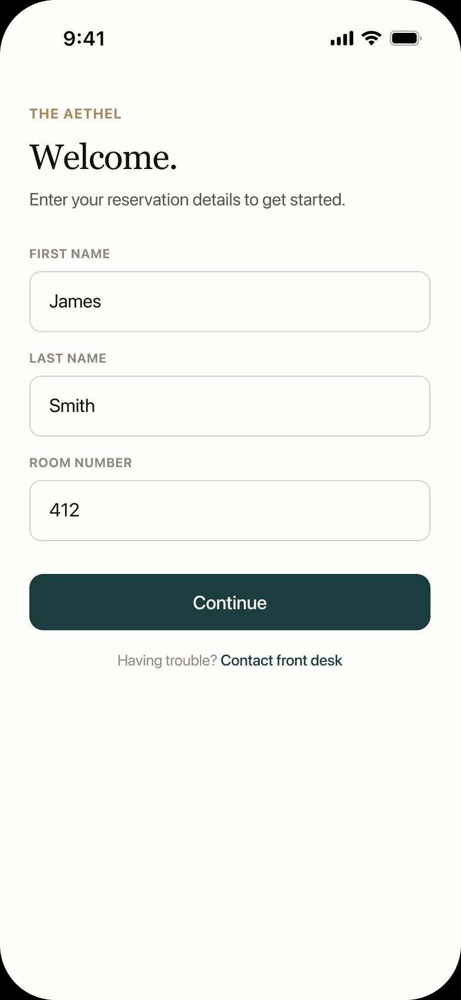
QR-based entry removes staff mediation entirely. The guest enters the system before asking for permission.
For eight years, I was on the other side of this system — the one fielding the calls that should never have happened. This is what I built when I decided to fix it.
The pattern this system addresses — customers losing visibility mid-process and filling the gap with follow-ups — exists in every product-led environment. This is what I built to fix it in a high-volume operations context. The logic transfers.
"The experience doesn't break when service fails. It breaks when the guest stops understanding what's happening."
Eight years. Four properties. Three countries. The same breakdown, every time.
Not every request fails. Most are fulfilled — towels delivered, repairs completed, items retrieved. The operation, technically, works.
What kept failing was the moment between dispatch and arrival. The guest submits a request. The front desk logs it. The system carries it forward. And from that point on — the guest is alone with uncertainty.
They call back. We answer. We say "it's on its way." We don't actually know if it is. We check with housekeeping. Housekeeping checks with the runner. Someone says five minutes. It's been twenty.
This is not a failure of people. It's a failure of visibility — baked into every property management system I've worked with. And it wasn't an execution problem. The requests, in most cases, were being fulfilled. The breakdown was informational — and that distinction changes everything about what the solution needs to be.
I didn't build this because it seemed interesting. I built it after pulling a support ticket log and finding 13,644 entries filtered to a single issue type — repeated contacts, same rooms, consecutive days. Each one a guest who called back because the system had the information and never surfaced it. That's not a service problem. That's a recoverable operational cost that compounds daily.
There's a moment I watched happen dozens of times. A guest walks up to the front desk — not to check in, not to check out. They walk up because they submitted a request forty minutes ago and heard nothing.
They're not angry yet. They're uncertain. And uncertainty, at this level of hospitality, reads as neglect.
The conversation that follows takes three minutes. It involves one front desk agent, one radio call to housekeeping, a wait, a vague answer, and a promise. The guest walks away — maybe reassured, maybe not. Three guests behind them in line watched the whole thing.
That interaction did not need to happen. The request was being fulfilled. The team member was on the way. The only thing missing was a number on a screen.
This is why visibility is not a UX problem. It's a service integrity problem. Every unnecessary escalation is a public moment — witnessed by other guests, absorbed into their perception of the property, reflected in the review they write six days later.
Onboarding and implementation are not linear. Neither is a hotel request. These are the four moments where the experience breaks — not because execution failed, but because the system stopped communicating. Each one maps directly to failure patterns in any high-touch client environment. In an onboarding context, these are the moments where time-to-value extends not because the product is slow, but because the customer lost the thread.
When capacity is high, requests lose clarity. The guest cannot distinguish between queued, delayed, or lost. Silence, at this level, is interpreted as failure — regardless of what is actually happening.
When a request is already in motion, cancellation becomes ambiguous. A binary yes/no response creates a false sense of control. The system must communicate operational constraint — not certainty.
A request can be marked complete while the issue still exists. Without a resolution check, the failure disappears from the system — and returns as a public escalation that is harder to contain.
When the guest asks for something the system operationally cannot do — cancel a request mid-delivery, reopen a closed ticket — the design choice is binary: hide the constraint or name it and redirect. Every rejection is either a trust failure or a trust signal. The difference is entirely in how the system communicates the "no."
The instinct is to build faster. Reduce the wait time. Optimize the queue. That would solve latency. It would not solve the problem.
The real constraint was not time — it was uncertainty. A guest who waits 20 minutes with a visible ETA feels more in control than one who waits 10 minutes in silence. The product needed to reduce perceived wait, not just actual wait.
Each row is not a feature. It is a decision. Every entry connects a specific operational friction to a system response — and maps that response to a strategic outcome. The goal was not to build a feature list. It was to remove the customer's need to follow up, one friction point at a time.
These decisions apply equally to any high-touch customer journey — hospitality, SaaS onboarding, or B2B implementation. The friction is the same. The system response is the same.
| Operational Friction | System Decision | Strategic Outcome |
|---|---|---|
| Opaque handoffs | Centralized request tracking | Shared state-truth across guest and staff |
| Guest anxiety during wait | Real-time ETA & status timeline | Eliminates the need for manual desk follow-ups |
| Input paralysis at entry | Structured UI + inline fallback text | High-speed entry that absorbs categorization errors |
| Forgotten status updates | Task-tied state changes | Removes reliance on staff remembering to update |
| Hardware / download barriers | QR-based PWA framework | Zero-download access with immediate utility |
| Guest input the system cannot fulfill | Honest rejection + redirect | Trust maintained through transparency, not silence |
request_id · category · assigned_to · current_status · eta_timestampEach group of screens is a behavior — not a feature set. The value of this interface is not in the ideal path. It is in how the system performs when things are not ideal. Each chapter names what the system is doing and why it matters operationally.

QR-based entry removes staff mediation entirely. The guest enters the system before asking for permission.
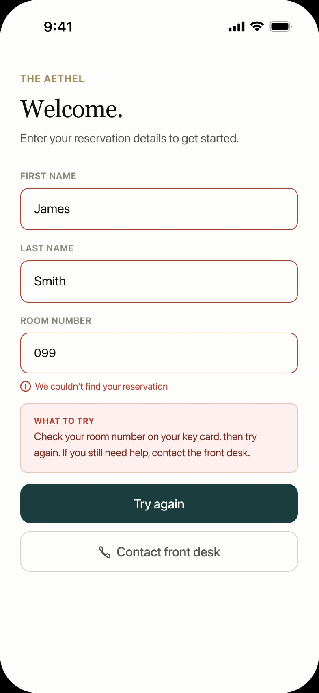
"We couldn't find your reservation" is specific. "Something went wrong" is not. The error names the problem so the guest knows whether to retry or call the desk.
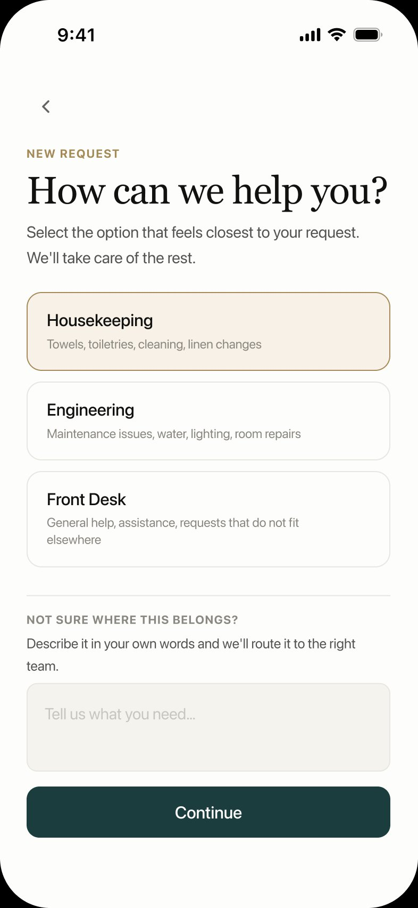
Three categories cover ~90% of requests. The free-text fallback is a deliberate routing mechanism — ambiguous requests are better captured in the guest's words than misrouted by forced categorization.
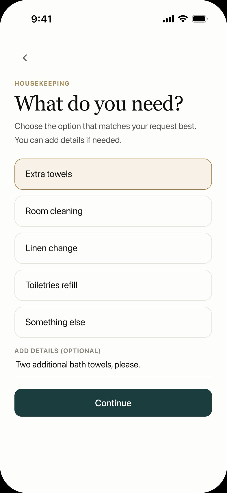
"Something else" is not a failure state — it's an honest option. Absorbing ambiguity here costs nothing. Misrouting costs minutes and a follow-up.
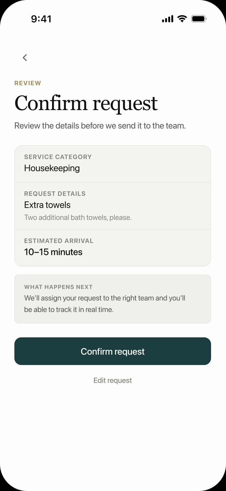
The ETA appears before submission — not after. A guest who sees "10–15 minutes" before confirming has calibrated their expectation before the clock starts.
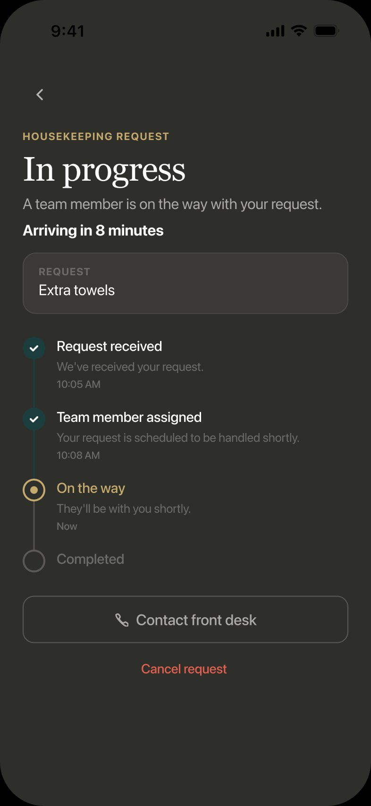
The live timeline shows the guest that the system is tracking — not displaying a frozen screen while the request disappears. "Contact front desk" is always visible, but unmistakably the fallback.
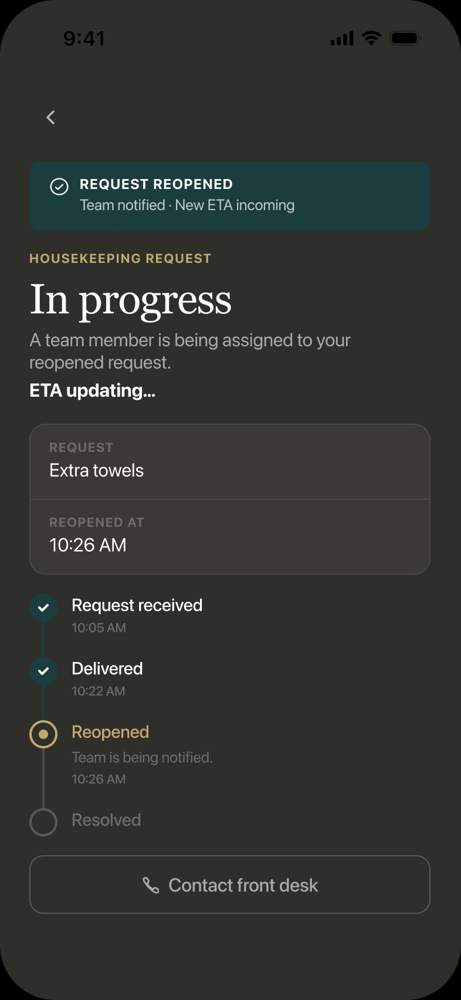
Decision: Reuse Screen 06 with a context banner — the guest isn't starting over. Prevents: disorientation after a reopen. The timeline preserves every prior event.
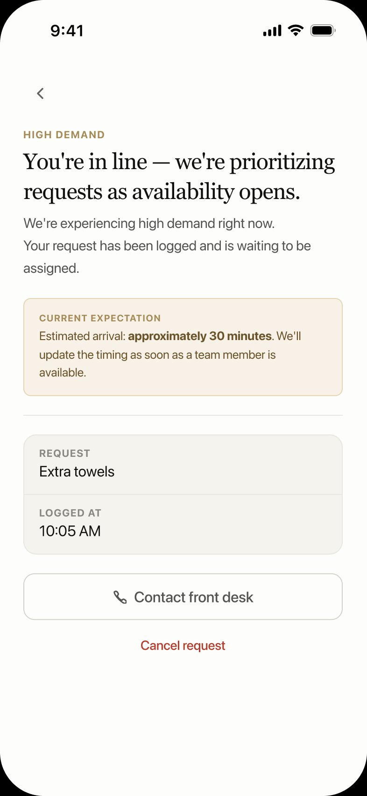
The system names the constraint clearly — approximate wait, reason, and commitment to update. Honest disappointment outperforms false reassurance every time.
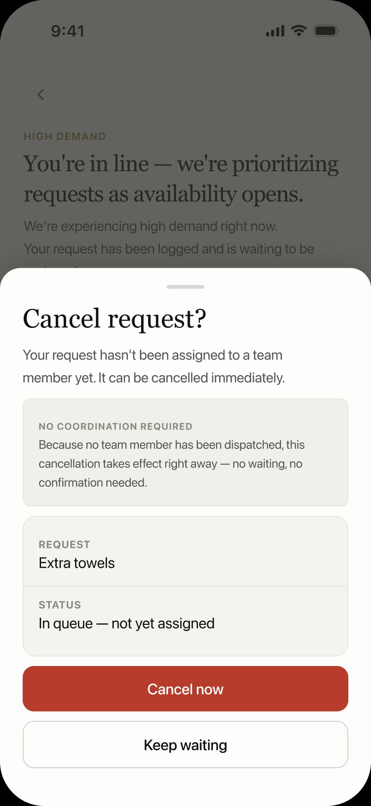
Before any team member is assigned, cancellation is immediate. The modal reflects this honestly — no "we'll check with the team" theater when there's no team to check with.
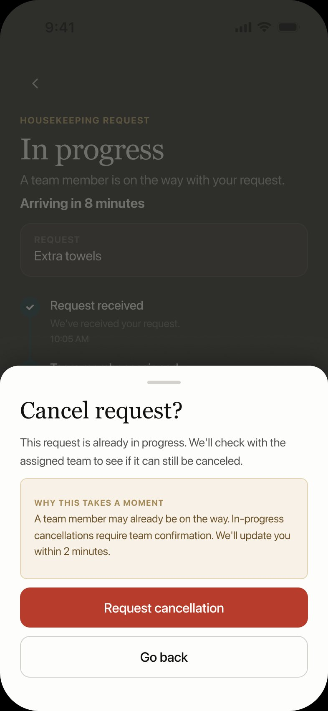
"We'll check with the assigned team" is not a limitation disguised as a feature. It's an honest communication of operational constraint — the system explains why instead of pretending the guest has control they don't.
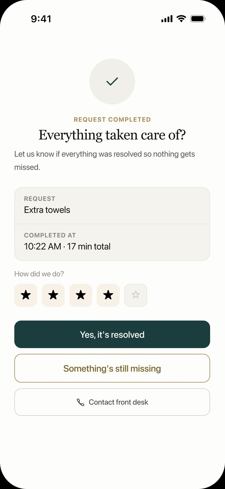
Completion requires guest confirmation — not just a staff tap. "Yes, it's resolved" closes the loop cleanly. "Something's still missing" surfaces the gap before it becomes a lobby escalation.
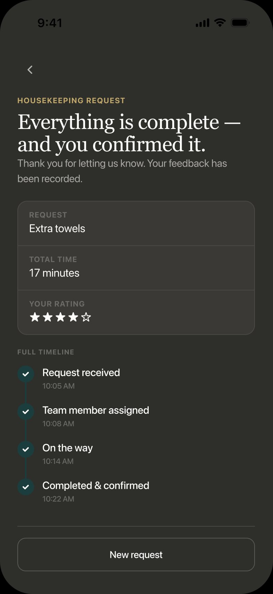
Decision: Full timeline visible after completion. Transparency after delivery builds the same trust as transparency during it.
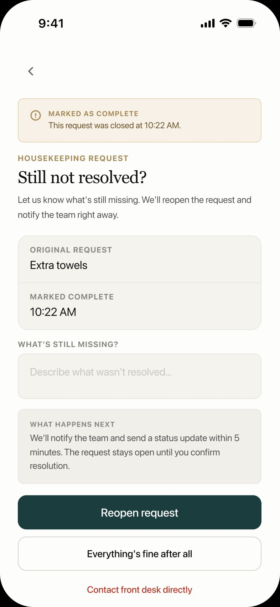
One tap surfaces the gap. "Contact front desk directly" is the last option — the system has one more chance to contain the escalation before it becomes a public lobby moment.
The rejection icon is gold — not red. Red signals failure. Gold signals a timing collision with an outcome that is actually okay. The cancellation attempt appears in the final timeline because the system tracks reality, not just the happy path.
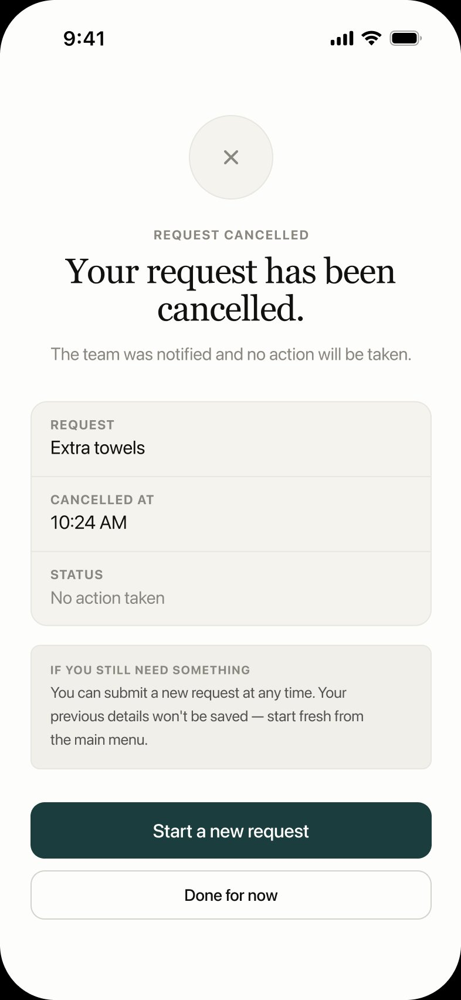
Decision: Grey icon — not red, not teal. Closed state, not failed state. Prevents: emotional dramatization of a guest-initiated action. Copy follows the same logic: factual, not apologetic.
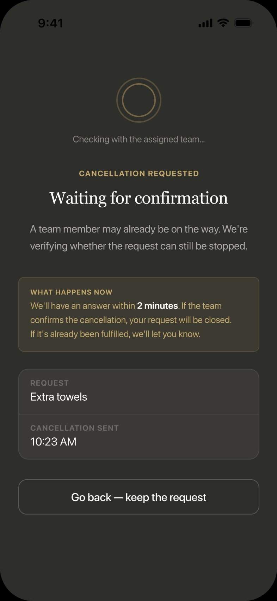
Decision: Active waiting state, not silence. Prevents: the guest assuming the system lost their request. 2-minute window with one escape: go back.
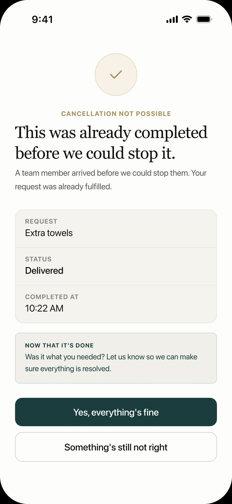
Decision: Lead with resolution, not rejection. Gold icon — timing collision, not failure. Prevents: the guest interpreting a fulfilled request as a system error.
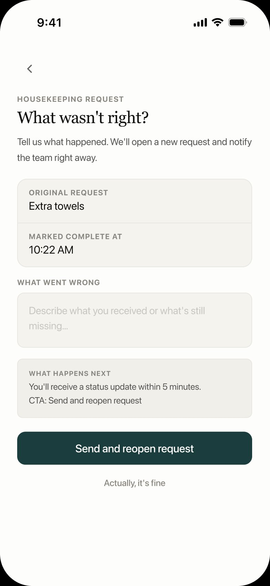
If something was actually wrong with the delivery, the system doesn't close the loop — it asks "What wasn't right?" and opens a new request immediately. The rejection becomes an intake.
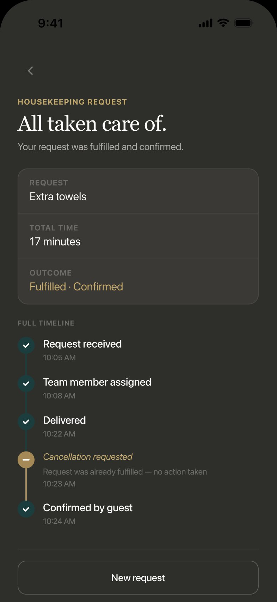
The timeline includes the cancellation attempt — shown in gold italic as a contextual event, not an error. The system tracked what actually happened, including the moment the guest tried to exit.
The system was designed to intercept the conditions that produce repetition — not by speeding up execution, but by making state visible before the guest needs to ask.
13,644 support tickets. One property. Several weeks.
Filtered to a single issue type, the log returned dozens of repeated entries across consecutive days, for the same rooms, from different guests. Each repeat entry represents a guest who contacted the front desk a second time. Or a third.
A status call takes roughly 3 minutes: the guest explains, the agent checks, someone radios the team, a response comes back. At a property handling 80 requests per shift, even a 15% callback rate means nearly two full hours of front desk capacity spent on information the system already had — and never surfaced.
That capacity isn't recovered through faster service. It's recovered through visible service. The problem was never that the operation was slow. The problem was that it was invisible.
In a SaaS environment, the same pattern surfaces as elevated support tickets during onboarding, extended time-to-value, and — if unaddressed — a churn signal that looks like disengagement but is actually confusion. The customer didn't leave because the product failed. They left because the system stopped telling them what was happening.
| Metric | Target | Rationale |
|---|---|---|
| Reduction in secondary status calls | 40% | Grounded in hospitality research showing 30–50% call reduction when guests have real-time request visibility. Mid-range target for V1. |
| Tickets triggering automated state updates | 80% | Accounts for partial staff adoption and legacy workflow habits. Ambitious but achievable without full operational change management. |
| Abandonment to "Contact front desk" during active tracking | <15% | Each point below this represents a guest who trusted the system over the phone. |
V1 proves the hypothesis: legibility reduces friction. What it does not yet answer is how the system performs when it is right about the process but wrong about the timing — and what happens when the staff side of the loop fails silently.
I would map every point in the customer journey where the system stops communicating and the customer starts guessing. That gap — not the product, not the team — is where churn begins. It's where onboarding stalls. It's where a renewal conversation starts from a deficit instead of a baseline.
I've spent eight years watching it happen in real time, and I have the ticket logs to prove what it costs. A 15% callback rate at 80 requests per shift is two hours of capacity burned daily on information the system already had. In SaaS, the same math shows up as support volume, implementation delays, and time-to-value drag — all traceable to the same root cause: the customer stopped receiving signal and started filling the gap themselves.
I know what this looks like before it becomes a retention problem. I know how to name it, quantify it, and build around it. That's what I'd bring on day one.